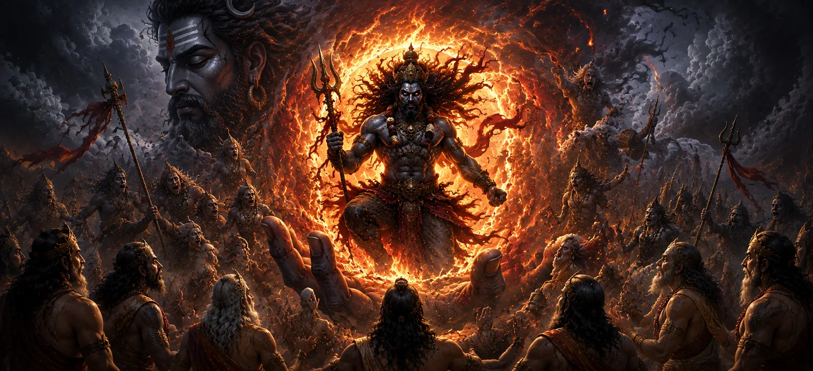

This chapter narrates the awe-inspiring manifestation of Vīrabhadra, the mighty warrior created by Lord Shiva after learning of Sati’s sacrifice and Dakṣa’s grave disrespect. Overwhelmed with grief and righteous anger, Shiva unleashed a portion of His divine power, giving rise to a fearsome being destined to restore cosmic justice. The birth of Vīrabhadra marked the beginning of the divine response to the events at Dakṣa’s sacrifice.
When the tragic news of Sati’s abandonment of her mortal body reached Mount Kailāsa, Lord Shiva was overcome with immense sorrow. The loss of His beloved consort and the insult she had endured shook the very foundations of the cosmos.
Though Shiva is known for His compassion and detachment, the injustice committed against Sati awakened His righteous fury. His grief transformed into a powerful force dedicated to correcting the imbalance caused by Dakṣa’s arrogance and disrespect.
From a lock of Shiva’s matted hair and the intensity of His divine energy emerged Vīrabhadra, a colossal and fearsome warrior. Radiating immense power, he embodied Shiva’s determination to uphold justice and defend the honor of the Divine.
Lord Shiva entrusted Vīrabhadra with a sacred mission. He commanded him to proceed to Dakṣa’s sacrifice and ensure that those responsible for disrespecting Sati and Shiva faced the consequences of their actions. Vīrabhadra accepted the command with complete devotion and obedience.
The chapter demonstrates that cosmic justice ultimately responds to grave wrongdoing.
Vīrabhadra’s birth reveals the limitless power contained within Lord Shiva.
Vīrabhadra exemplifies complete dedication to the divine will of his Lord.
Alongside Vīrabhadra, countless gaṇas and divine attendants of Shiva prepared themselves for the coming mission. Their presence reflected the immense significance of the events that were about to unfold at Dakṣa’s sacrifice.
As Vīrabhadra prepared to depart, signs of a cosmic storm appeared throughout the universe. The forces of divine justice had been set into motion, and the sacrifice that once symbolized pride and arrogance would soon face the consequences of its actions.
The birth of Vīrabhadra teaches that divine compassion and divine justice exist in perfect balance. While Shiva embodies mercy and forgiveness, He also protects righteousness and responds when sacred principles are violated. The chapter reminds devotees that truth and devotion are always safeguarded by the Divine.
Vīrabhadra appeared with a terrifying and majestic form that reflected the power of Lord Shiva. His eyes blazed like fire, his presence shook the heavens, and his immense strength inspired both awe and fear among the gods and celestial beings. He stood as the living embodiment of divine justice.
After receiving Lord Shiva’s command, Vīrabhadra set out toward Dakṣa’s sacrifice accompanied by Shiva’s gaṇas. As they advanced, ominous signs appeared throughout the universe. The earth trembled, the skies darkened, and all creation sensed that a powerful force of divine justice was approaching.
"When righteousness is challenged, the Divine manifests power to restore balance."
Continue exploring the sacred events of Sati Khanda as the mighty Vīrabhadra, born from Lord Shiva’s divine power, prepares to carry out the mission of cosmic justice at Dakṣa’s sacrifice.